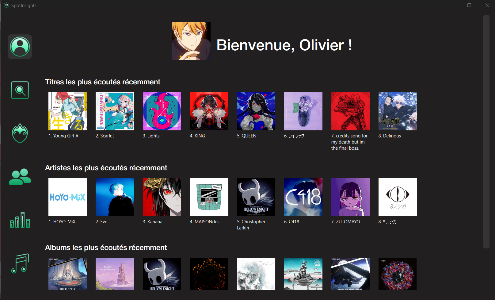
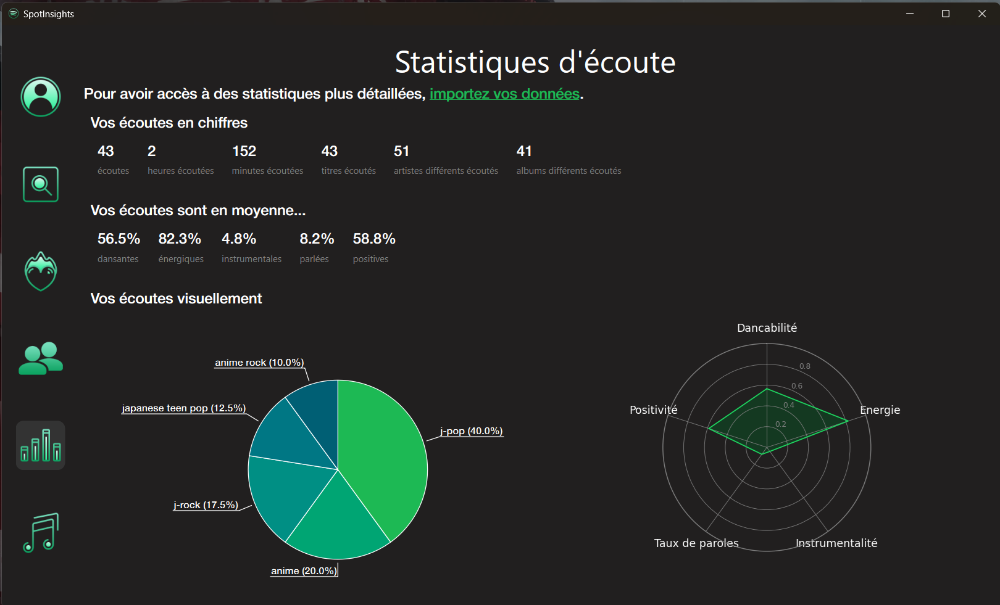
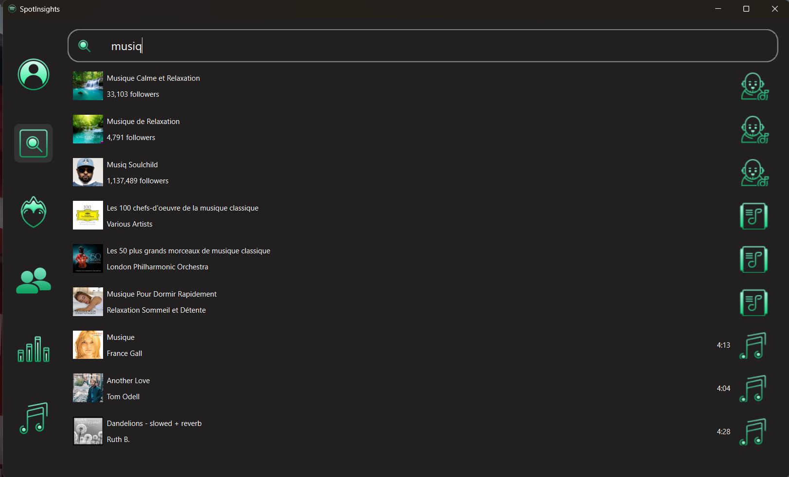
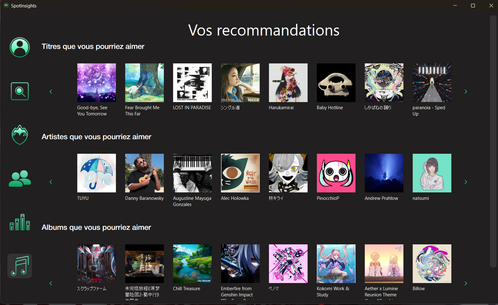

This project was made with two friends: Romeo and Mr.Pringles.
The desktop app is made with Python Qt, a framework widely used to create desktop applications compatible between Linux and Windows. The main functionalities of the app are:
And much more!
The main menu:
Some statistics:
Search tracks on Spotify:
Get recommendations:
